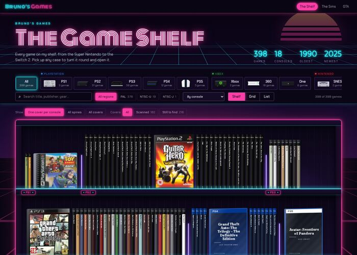
01Neon Arcade
A synthwave night: a neon sign for a title, a sun setting over a moving grid, black racks lit by LED tubes.
Each one is the real site (the shelf, the grid, the list, picking a game up, the Sims and GTA pages) with one extra stylesheet that changes only how it looks. None of them is the live site yet.
Open them through the same web server as the site. The live site keeps its own look. The stylesheets are in this folder; node tools/style-previews.mjs rebuilds these previews after the site's pages change.

A synthwave night: a neon sign for a title, a sun setting over a moving grid, black racks lit by LED tubes.
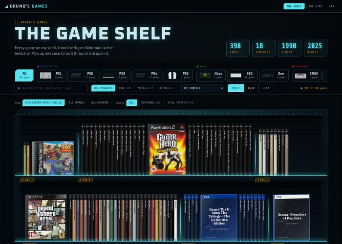
A sci-fi archive seen through a heads-up display: cyan and amber, cut corners, scanlines, a targeting bracket on the case you point at.
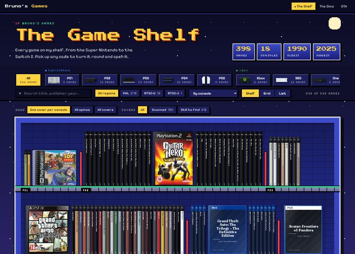
A 16-bit RPG: the bookcase is a blue menu window, the shelves are stone platforms, and a pointer bounces over the case you are on.
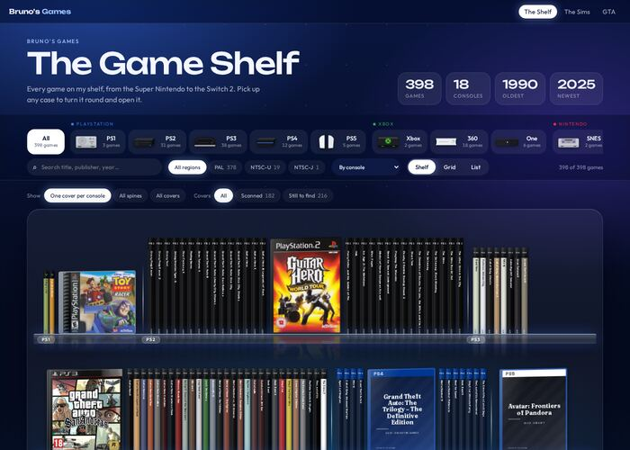
A console home screen: deep blue light, frosted glass, white for what is selected, and floating glass shelves with reflections.
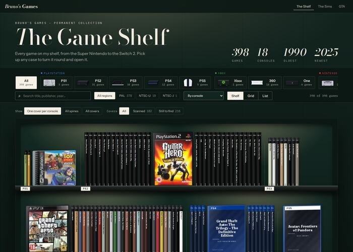
A museum exhibition: green gallery walls, a spotlight on every shelf, stone plinths, ivory placards and a velvet rope.
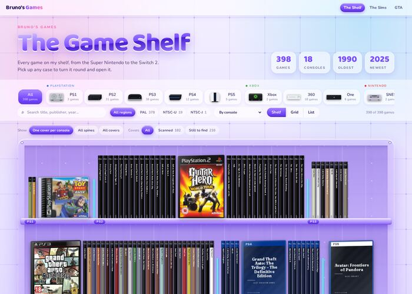
Light: see-through purple Y2K plastic over a circuit board, clear acrylic shelves with screws, jelly buttons.
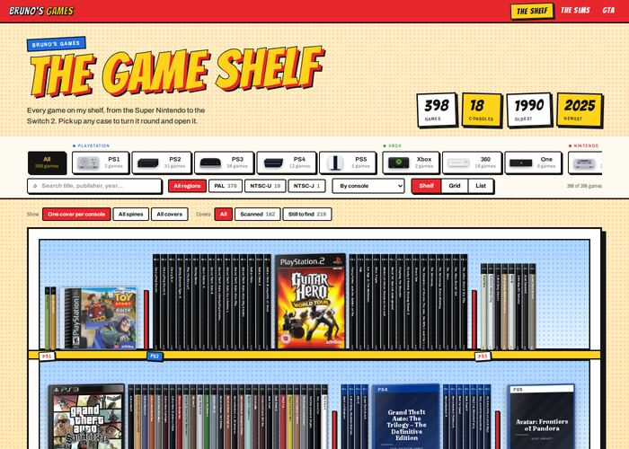
Light: a 90s games magazine with halftone dots, thick outlines, sticker labels, a speech-bubble tooltip and a burst of rays.
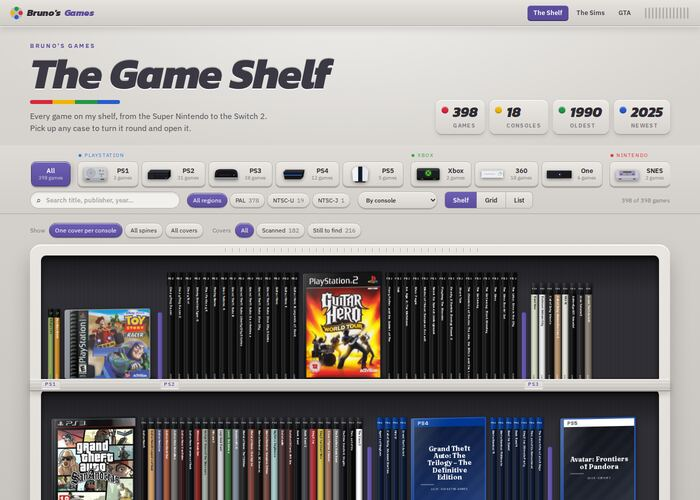
Light: the site built like a 16-bit console, with grey plastic, vents, cartridge slots and the four coloured face buttons.
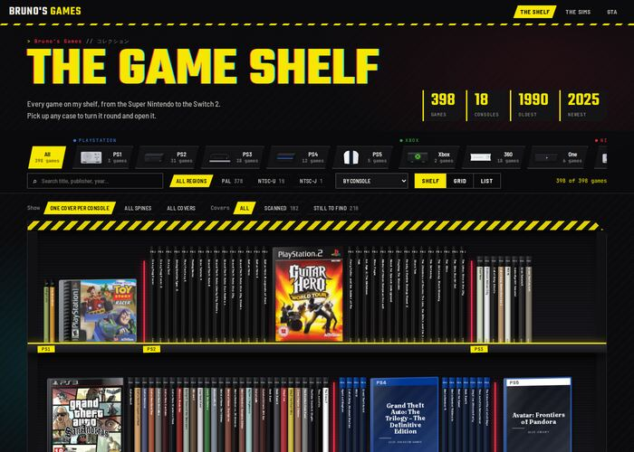
A cyberpunk street: black and hazard yellow, warning-stripe shelves, yellow tape labels, and cases that glitch red and cyan.
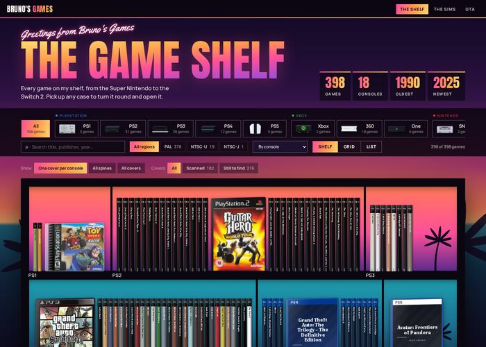
After GTA VI's Vice City: a sunset over the water, palms in silhouette, and the shelf as a collage of panels split by black gutters.
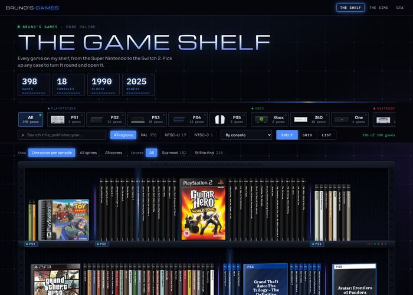
A server rack in a data core: numbered rack units with status lights, a laser scan across the cases, a holographic projector pad.